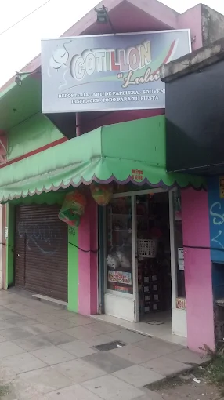
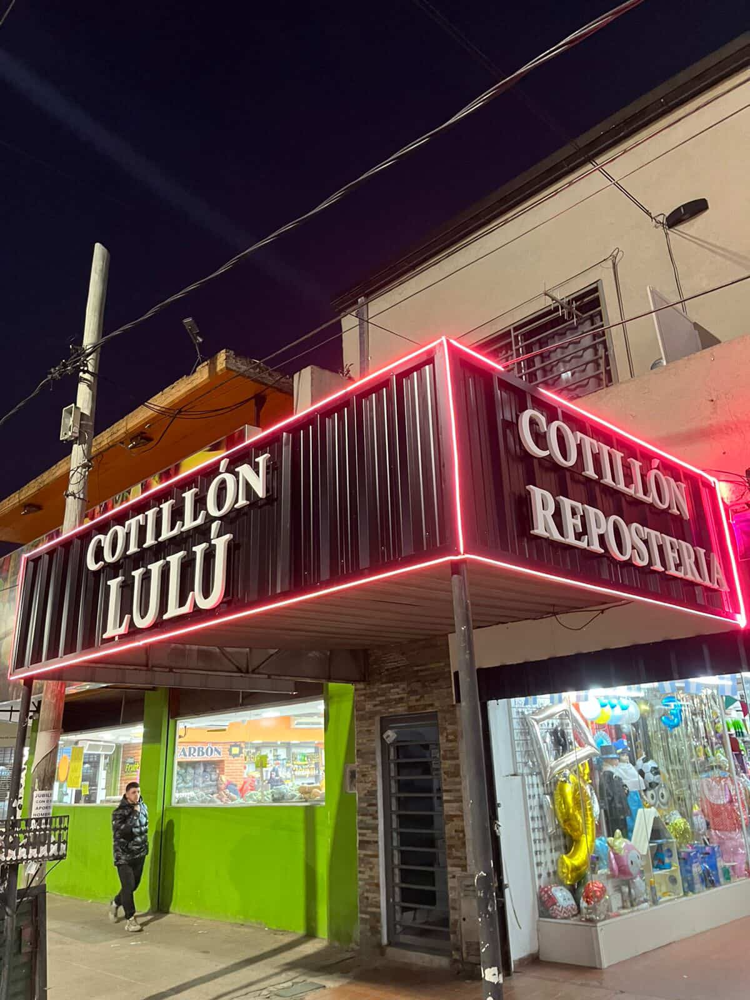

Nuestra Historia
Cotillón LULU nació hace 14 años en el corazón de Pablo Podestá, como un pequeño local familiar con grandes sueños. Empezamos vendiendo globos, serpentinas y artículos de cumpleaños a nuestros vecinos y amigos. Con esfuerzo, cariño y mucha dedicación, fuimos creciendo hasta convertirnos en el lugar de referencia para todo tipo de celebraciones en la zona.
Hoy seguimos con el mismo espíritu: brindar alegría, color y magia a cada momento especial. ¡Gracias por acompañarnos en este camino!

